Minhas habilidades
- HTML básico
- CSS básico
- JavaScript básico
- Python básico
- Lógica de programação
Projeto que eu fiz
Acesse alguns projetos
Ver meu projetoContato
Primeiros projetos com JavaScript
Quando comecei a aprender JavaScript, fiz alguns projetos simples para treinar a lógica e ver o código funcionando na prática
Um deles foi um jogo de adivinhação, onde a pessoa tenta acertar um número e o site vai mostrando as mensagens
Com isso eu pratiquei variáveis, função, clique no botão e também como mudar texto na tela
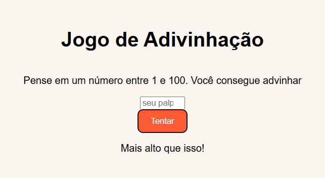
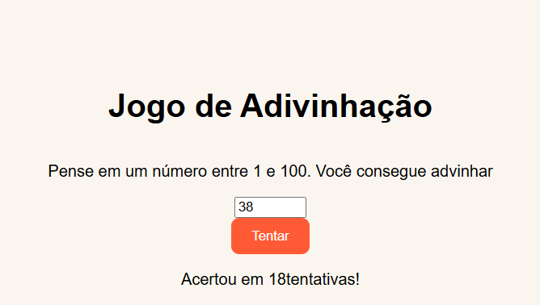
Aprendendo sobre formulários
Nessa parte eu estava aprendendo sobre formulário e como colocar campos dentro da página HTML
Eu treinei input, label, fieldset e legend, para deixar as informações mais separadas
Esse exercício me ajudou a entender melhor como montar um formulário simples e mais organizado
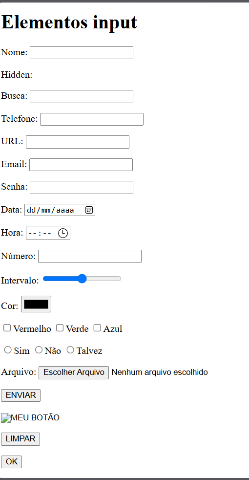
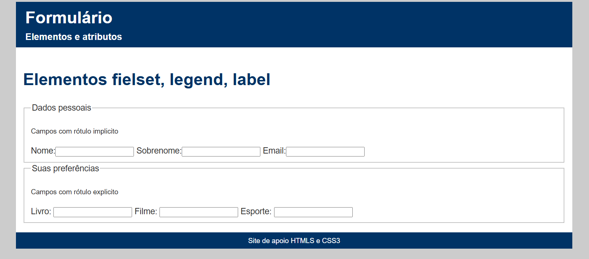
Tabela da verdade em Python
Também fiz uma atividade de Python sobre tabela da verdade, que foi passada pelo professor Dorival
Nesse código eu trabalhei com verdadeiro e falso, comparações e a parte de mostrar o resultado
Essa atividade me ajudou bastante a entender lógica e pensar no passo a passo do programa
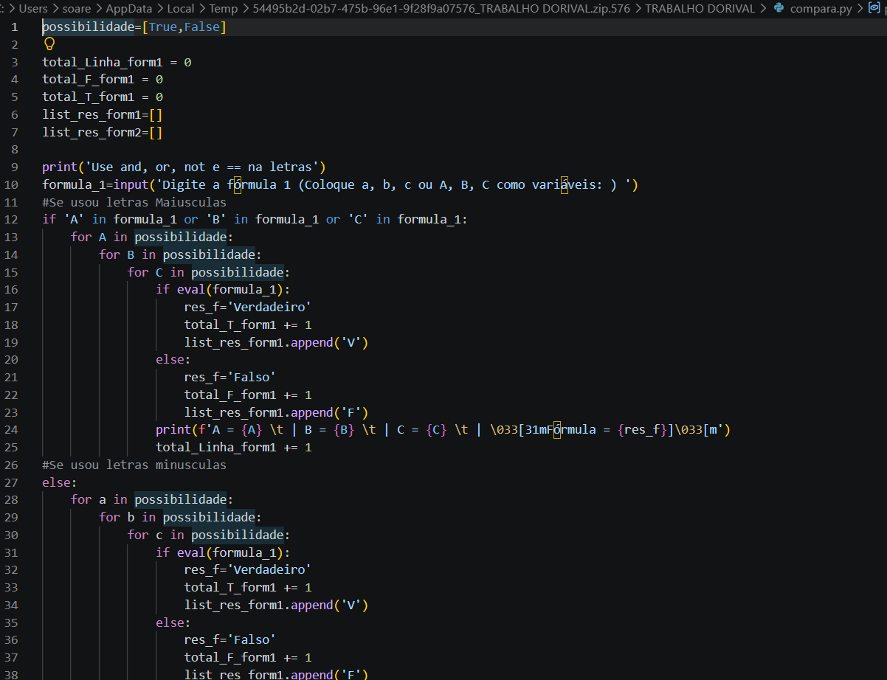
Cabeçalho em Python
Em outra atividade eu aprendi a fazer um cabeçalho em Python com o professor Juliano, usando função
Eu usei isso para montar um menu simples no terminal e deixar a saída do programa mais arrumada
Foi uma atividade boa para entender melhor funçãoe não repetir tanto o código
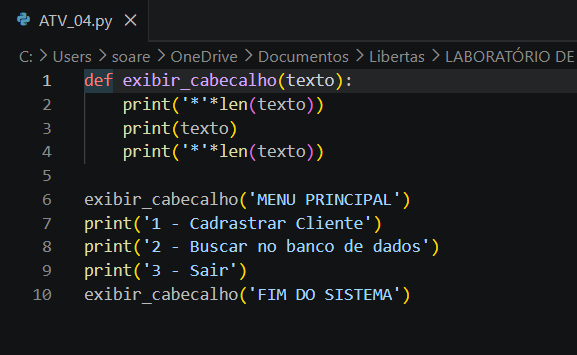
Matrizes em Python
Também aprendi sobre matrizes em Python com o professor Julio, usando linhas e colunas para guardar os valores
Nesse exercício eu acessei os valores da matriz, contei linhas e colunas e usei laços de repetição
Essa parte ajudou minha lógica, porque matriz no começo é meio confuso, mas depois vai fazendo sentido
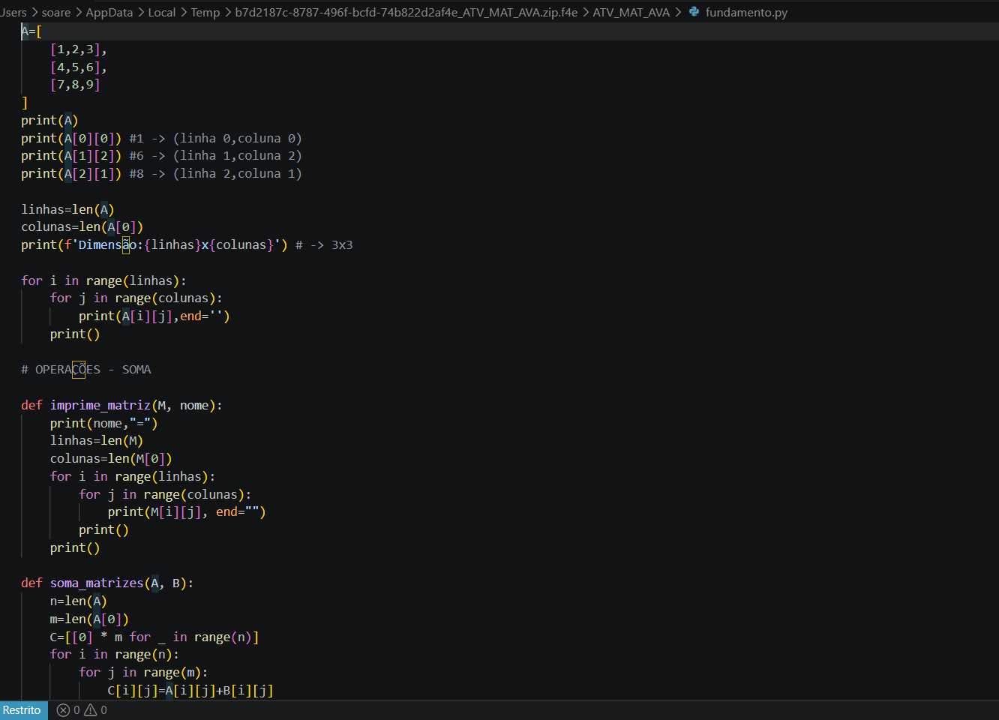
Primeiro site feito em grupo
Esse foi o primeiro site que fiz em grupo.Foi legal porque cada um ajudou em uma parte do projeto
Nesse trabalho eu ajudei na montagem das páginas, organização dos textos e na parte visual do site
Com ele eu pratiquei HTML, CSS e também aprendi um pouco como é fazer um site em equipe
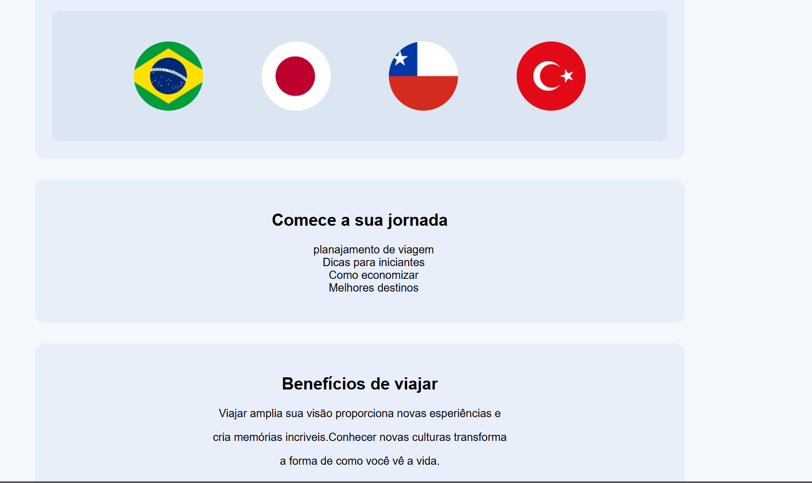
Aprendendo div e estrutura da página
Aqui eu estava aprendendo a usar div e a separar melhor as partes de uma página, como header, nav, main e footer
Esse exercício ajudou a entender onde cada coisa fica dentro do site
Foi uma prática simples, mas ajudou bastante a enxergar melhor a estrutura da página
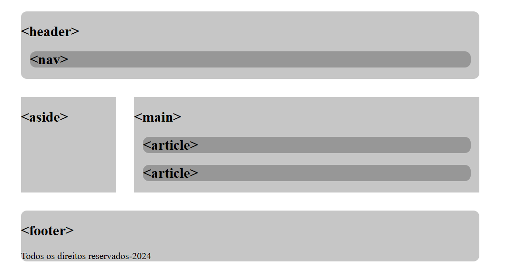
Certificados
Também coloquei alguns certificados que consegui durante meus estudos
A maioria deles é ligada a Python, lógica e repetição,que foram conteúdos que eu venho estudando
Para mim eles mostram um pouco da minha evoluçãoe do que eu já fui aprendendo na área
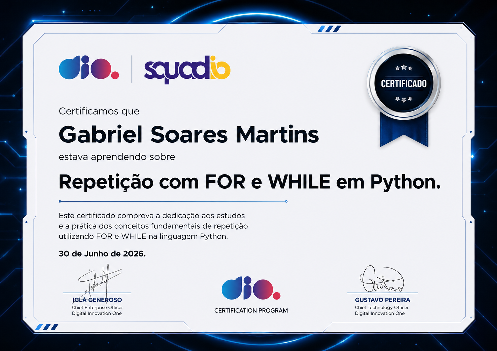
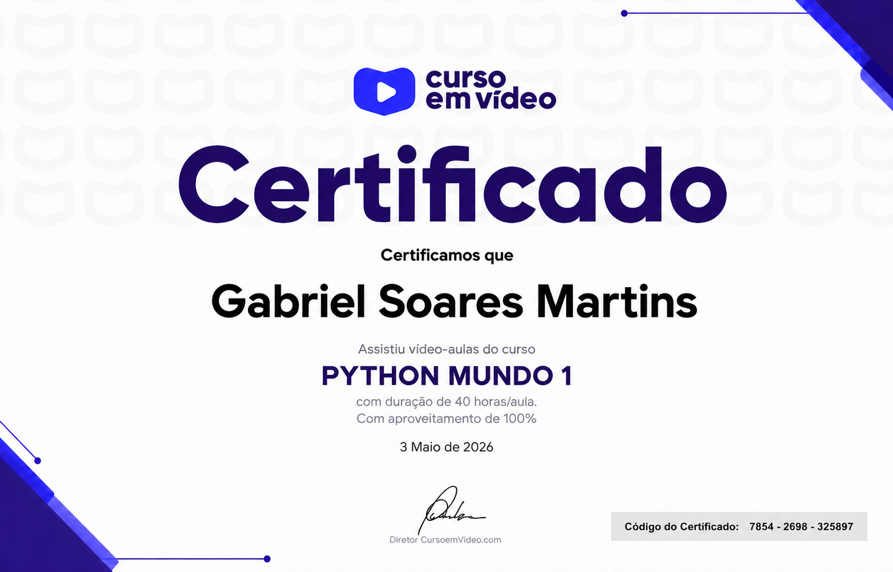
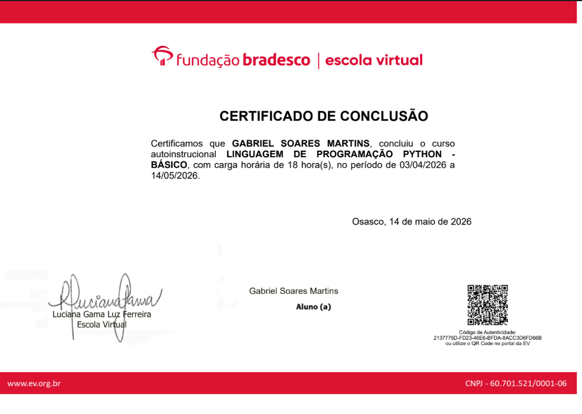